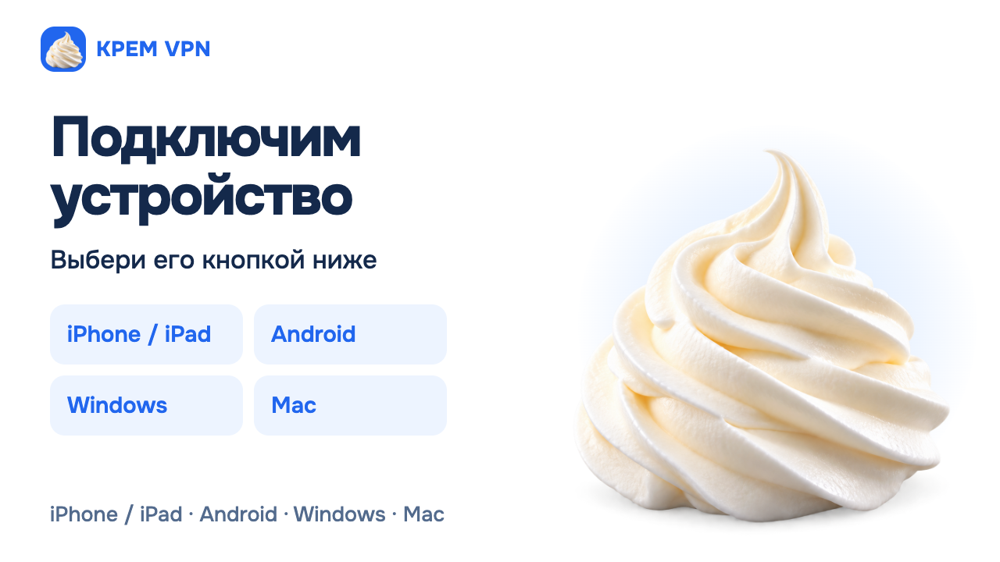

Публичный сайт ведёт в отдельный KREM-бот, где находятся покупка, подписка и помощь.
KREM VPN
Продукт · Telegram · платежи · инфраструктура
KREM VPN — путь от бренда до работающего доступа
Мы собрали продуктовый контур вокруг VPN: бренд и сайт, покупку в Telegram, подтверждение ЮKassa, личный кабинет, выдачу подписки в Happ и Incy, а также мониторинг и безопасное восстановление.
1 ₽контрольная оплата ЮKassa подтверждена, доступ выдан
5/5форматов выдачи Happ, Incy и нейтрального клиента прошли 15 октября
7/10профилей передали HTTPS в последнем полном срезе; три DE-пути зафиксированы как недоступные
23проверки полной web-цепочки прошли на изолированном двухсерверном стенде
Срез доказательств: 15 октября 2026 года. Показатели фиксируют проверенные испытания, а не обещают одинаковую доступность всех маршрутов в будущем.
статус кейса
сайт и покупка через бот опубликованыРаботающий продукт с честной границей готовности
Владелец оплатил контрольную пробу, получил доступ и отдельно подтвердил подключение на своём устройстве.
Полная покупка на сайте прошла техническую репетицию, но не опубликована. Лимит устройств также не включён.
Не просто VPN-сервер, а продукт целиком
Задача была убрать разрыв между рекламой, оплатой и сложной технической выдачей — и оставить пользователю один понятный маршрут.
Айдентика и сайт
Самостоятельный бренд «Крем VPN», фирменный образ, адаптивный сайт, помощь и прозрачные условия без смешения с брендом «Кремлинет».
Бот как личный кабинет
Навигация, проба, покупка, текущий срок, прежняя ссылка, подключение устройства и понятный путь к поддержке.
ЮKassa и отдельный реестр
Заказ фиксируется до перехода к провайдеру. Подтверждение перепроверяет сумму, валюту, бренд и заказ, а повтор события не продлевает доступ дважды.
Happ и Incy
Один HTTPS-адрес отдаёт форматы для двух основных клиентов и нейтрального импорта, с заголовками срока и запретом кэширования.
Несколько путей подключения
Разные протоколы и географические выходы дают запасные варианты. Они мониторятся по реальной передаче HTTPS, а не только по состоянию процесса.
Мониторинг и восстановление
Проверки отделяют выдачу подписки от трафика, сохраняют работающие процессы и не запускают автоматический «ремонт» по одному сомнительному сигналу.
путь покупателя и системы
От первого знакомства до подключённого приложения
Каждый переход сохраняет контекст, а финансовый результат подтверждает сервер — не кнопка в браузере и не возврат с платёжной страницы.
Сайт объясняет продукт
Пользователь видит тариф, способы подключения и переходит в отдельный Telegram-бот KREM.
Бот фиксирует заказ
Выбранные цена, срок, бренд и согласие сохраняются до открытия защищённой страницы ЮKassa.
Сервер подтверждает оплату
Событие провайдера запускает независимую проверку. Реестр защищает от повторного начисления при replay или сетевой неопределённости.
Доступ возвращается в тот же аккаунт
Бот показывает срок и прежнюю ссылку; её можно импортировать в Happ или Incy и обновлять при продлении.
Подписка выдана
Доступ появляется только после подтверждённого платежа.
Оплату можно проверить позже
Незавершённый возврат не создаёт второй заказ и не просит платить повторно.
Сохраняется та же ссылка
Технически проверено прибавление срока к остатку; полная реальная оплата 199 ₽ ещё ожидает приёмки владельца.
Один визуальный язык от знакомства до подключения
Использованы опубликованные брендовые материалы без клиентских данных. Это рабочие карточки продукта, а не выдуманный концепт для портфолио.

Архитектура без лишней сложности для пользователя
Общие серверы и магазин допустимы, но заказы, права и клиентские пути KREM и «Кремлинета» разделены.
01Сайтпозиционирование и вход
02Telegramидентичность и заказ
03ЮKassaоплата и чек
04Реестрквитанция и срок
05Выдачаединая HTTPS-ссылка
06Happ / Incyподключение устройства
Сложность была не в одной интеграции
Платёж, выдача и VPN-трафик могут ломаться независимо. Поэтому мы не свели контроль к одному зелёному индикатору.
Повтор платежа не должен дать второй срок
События и запросы имеют устойчивую идентичность. Pending, повтор и позднее подтверждение обрабатываются без второго начисления.
Работающий сервер ещё не означает работающий маршрут
Монитор отдельно проверяет выдачу, TLS, процессы и передачу HTTPS через каждый профиль. Последний срез честно сохранил три отказавших DE-пути.
Два бренда нельзя смешивать в учёте
KREM и «Кремлинет» используют общую инфраструктуру, но имеют отдельные боты, клиентские адреса, заказы и права.
Что подтверждено, а что остаётся развитием
Мы отделяем опубликованный продукт, владельческую приёмку и синтетическую инженерную проверку.
Сайт, отдельный бот и покупка через Telegram
На сайте указана актуальная цена 199 ₽; заказ ЮKassa начинается в KREM-боте.
Контрольная оплата и подключение
Проба за 1 ₽ оплачена, доступ выдан; владелец отдельно подтвердил работу подключения на устройстве.
Безопасное продление и web-цепочка
Сохранение прежней ссылки, прибавление срока и защита от replay прошли изолированные тесты; 23 проверки целого web-пилота завершились успешно.
Публичная web-покупка, приложение и лимит устройств
Web-checkout остаётся выключенным до реальной приёмки 199 ₽. Собственное мобильное приложение развивается; контроль устройств не включён.
Следующее развитие
Дальнейшие шаги основаны на фактических незакрытых проверках, а не на добавлении новых обещаний в интерфейс.
Принять полное продление
Одна осознанная оплата 199 ₽: чек, возврат, прежняя ссылка и остаток срока плюс 30 дней.
Опубликовать web-checkout после приёмки
Только после проверки реального владельца, публичных TLS-маршрутов и сценария восстановления.
Усилить независимость маршрутов
Разобрать отказ немецких путей, сохранить работающий NL-резерв и не обещать универсальную доступность.
Довести собственные приложения
Отдельно квалифицировать сборки, магазины, физические устройства и все форматы подписки.
Включать контроль устройств только после приёмки
Подготовленный код не равен функции production: нужны Linux-стенд, полная цепочка и явное окно выпуска.
Сохранять наблюдаемость
Продолжать раздельно измерять выдачу, трафик, сертификаты и состояние инфраструктуры.